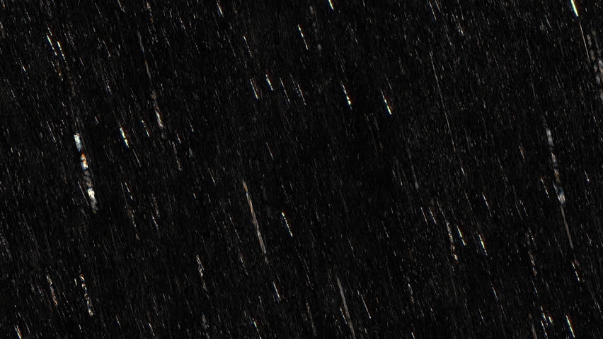
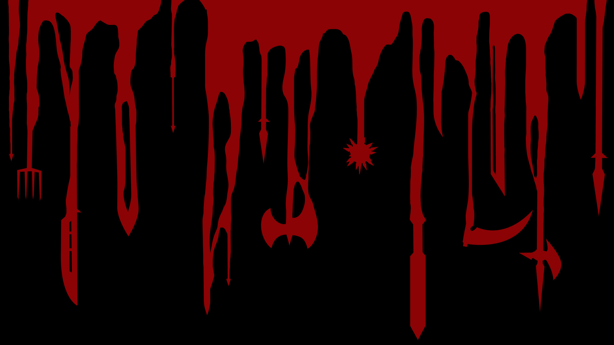
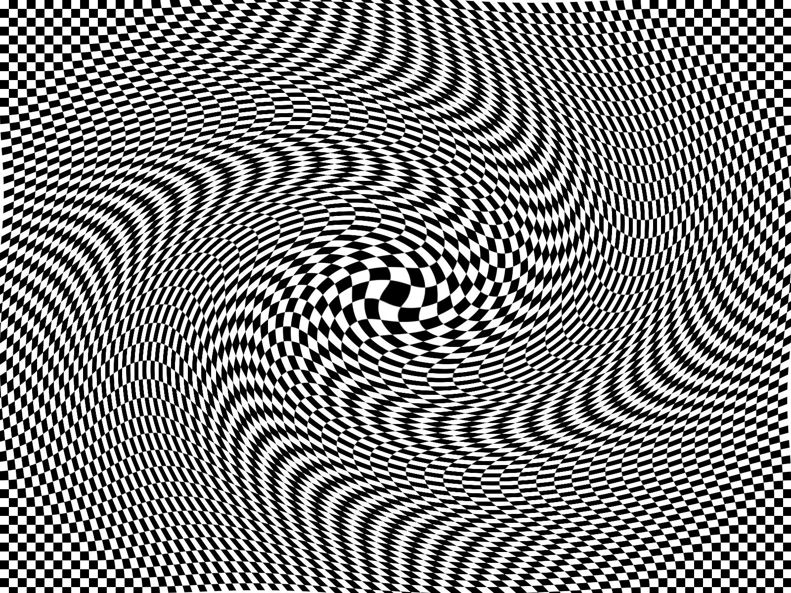

 Neerslachtig 134 likes Ach en wee, ik stap de bus uit. Mijn zoon – in wat voor wereld heb ik die jongen neergezet – ligt vredig in zijn wagentje te slapen, vrij van kwade gedachten.
 Gefrustreerd 10 likes Ik stap uit die godverdomde stinkbus. De mensen krioelen als mieren over het stationsplein. Ik wil ze vertrappen onder m’n schoenen.
 Kater 73 likes Ik had vandaag bus 21 willen nemen naar het Centraal Station om naar de Openbare Bibliotheek te gaan en Stijloefeningen van Raymond Queneau te lenen, een boekwerk waar ik al weken naar op zoek ben.
Beroemd 3 likes Vlak voordat ik de bus uitstap bedank ik de buschauffeur via de spiegel voor zijn diensten. Hij zwaait joviaal terug. ‘Mijn vrouw is een groot fan van u’, roept hij. ‘Doe haar de groeten’, zeg ik en stap uit. Centraal Station.
Beroemd 3 likes Vlak voordat ik de bus uitstap bedank ik de buschauffeur via de spiegel voor zijn diensten. Hij zwaait joviaal terug. ‘Mijn vrouw is een groot fan van u’, roept hij. ‘Doe haar de groeten’, zeg ik en stap uit. Centraal Station.
Beroemd 3 likes Vlak voordat ik de bus uitstap bedank ik de buschauffeur via de spiegel voor zijn diensten. Hij zwaait joviaal terug. ‘Mijn vrouw is een groot fan van u’, roept hij. ‘Doe haar de groeten’, zeg ik en stap uit. Centraal Station.